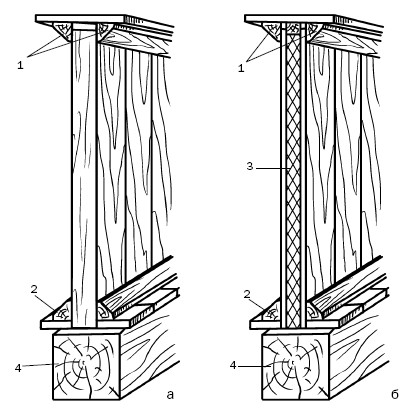
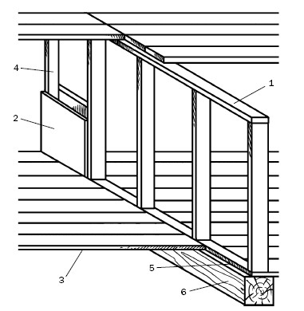
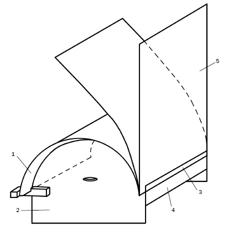
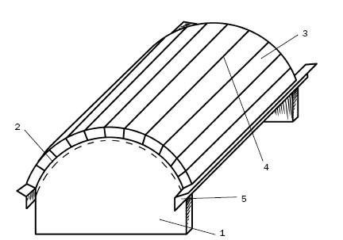
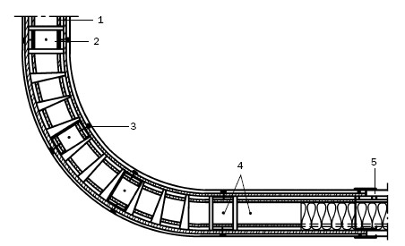
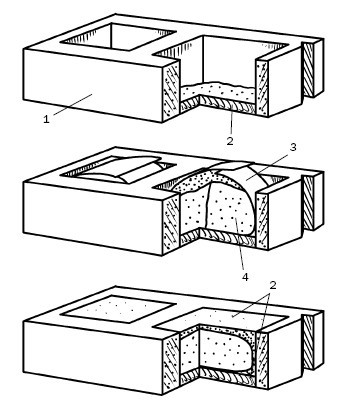
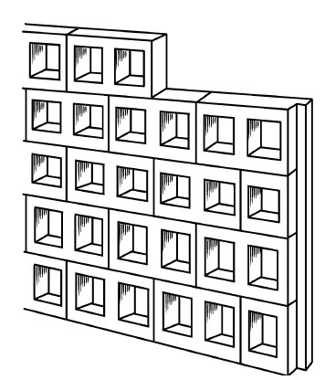
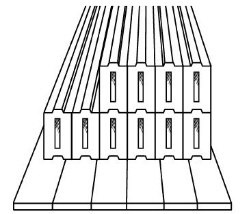

Устройство перегородок.

Легкие стенки, которые разделяют внутренние помещения, называются перегородками. Они возводятся из различных материалов, в частности из дерева, кирпича, шлакобетона, гипса, стекла.
Для деревянных перегородок используется только сухая древесина, в готовом виде их толщина не должна быть менее 50–100 мм. Перегородки из дерева опираются на лаги снизу и проходят по балкам сверху. Материалом для них служит обрезная доска толщиной 40–50 мм, шпунтованные или с выбранными четвертями доски.
Деревянные перегородки бывают одинарными и двойными (рис. 122).

Рис. 122. Дощатые перегородки (размеры указаны в миллиметрах): а – одинарная; б – двойная; 1 – бруски; 2 – уровень пола; 3 – звукоизоляционный слой; 4 – балки (лаги)
Первые возводятся из строганых или нестроганых досок (последние штукатурятся, при этом доски надкалываются, чтобы штукатурка не пошла трещинами). Чтобы установить перегородку, к потолку прибивается доска, к которой с одной стороны прикрепляется треугольный брусок. На него и опираются доски перегородки, которые потом дополнительно фиксируются еще одним треугольным бруском.
А еще можно к балке и полу прибивать бруски, которые будут играть роль паза. С одной из сторон верхние и нижние направляющие не должны доходить до стены 250–300 мм, дабы через это «окно» можно было вставлять доски перегородки. Чтобы они легко входили в образованный паз, доски должны быть на 10 мм короче расстояния между верхней и нижней обвязкой. Для жесткости доски скрепляются шипами, которые устанавливаются с шагом 1000–1400 мм (это могут быть и гвозди).
Если стены дома деревянные, то перегородки прибиваются к ним гвоздями, если кирпичные, то в швах просверливаются отверстия, в которые вставляются пробки, и к ним гвоздями прибивается перегородка.
Двойные дощатые перегородки монтируются из щитов шириной 500–600 мм, по кромкам которых выбраны четверти. Для щитов используются доски толщиной 20–25 мм, которые с двух сторон прибиваются к стойкам. Промежуток между ними заполняется звукоизолирующим материалом (одинарные перегородки звукопроницаемы). Доски перегородки устанавливаются как горизонтально, так и вертикально. Тогда нижние концы досок входят в паз, который образуют два прибитых бруска, а по окончании монтажа перегородки они маскируются плинтусами. Верхние концы досок прибиваются к балке или потолку. Возведенная таким образом перегородка обшивается дранкой и оштукатуривается. Если между стеной и перегородкой замечаются небольшие щели, их надо заполнить войлоком.
При использовании для перегородок тщательно обработанных досок они покрываются сначала олифой, а потом лаком или эмалью.
Наиболее экономичным вариантом являются каркасно-обшивные перегородки (рис. 123).
По способу изготовления они не отличаются от каркасной стены, единственное различие в том, что боковые стойки прикрепляются к стенам. Промежуточные стойки устанавливаются на расстоянии 500–900 мм друг от друга. Для звукоизоляции пространство между стойками заполняется минеральной ватой, пенополистирольными плитами или мелким шлаком, керамзитом. Для обшивки используются ДСП, ДВП, SIP-панели, гипсокартон.
Вместо дерева каркас можно выполнить и из металла, например из оцинкованной стали, профиль можно приобрести в специализированном магазине. Отличительные особенности металлического профиля – он по всей длине прямолинеен, одинаково прочен, пожаробезопасен, не подвержен короблению, коррозии, не повреждается вредителями, не покрывается трещинами и прослужит не один десяток лет. Кроме того, по сравнению с деревянными стойками каркас из оцинкованной стали весит довольно мало, поэтому и работать с ним проще. Ассортимент достаточно широк, и при длине 6 м можно приобрести профиль шириной 40–140 мм.

Рис. 123. Конструкция каркасно-обшивной перегородки: 1 – верхняя обвязка; 2 – обшивка; 3 – пол; 4 – стойки; 5 – нижняя обвязка; 6 – лага
Чтобы его смонтировать, никакой сложный инструмент не применяют, практически в каждом доме найдутся угольник, рулетка, гидроуровень, отвес (хорошо, если имеется пара пружинных зажимов для крепления его к потолку), мел, шнур, электродрель и шуруповерт (можно использовать и отвертку, но это затянет монтаж, да и руки с непривычки устанут). Для резки профиля подойдут ножницы по металлу, если в вашем хозяйстве случайно не оказалось виброножниц или дисковой отрезной пилы (покупать их не стоит, если устройство металлического каркаса не является вашей профессиональной деятельностью).
Профиль размечается так же, как и деревянная стойка, отметки делаются фломастером. По ним следует резать, причем начать нужно с обоих бортиков. Потом профиль складывается пополам, перегибается, и разрезается полка стойки. Можно надрезать профиль и с обеих сторон.
Каркас легко собирается с помощью шуруповерта с регулируемой скоростью и реверсом. Работа не только облегчится – ее качество значительно повысится. Еще один инструмент сделает процесс более простым – десятисантиметровые С-образные обжимные щипцы с фиксатором, которыми можно быстро скрепить профиль, пока он не будет закреплен саморезами.
Монтаж каркаса собирается быстро при использовании саморезов длиной 11 мм с круглой головкой (винты со сверлильным концом не подойдут, так как рассчитаны на соединение толстых стальных листов, кроме того, их стоимость выше).
Обжимные щипцы фиксируют детали каркаса в необходимом положении, потом саморез вкручивается шуруповертом с битой. Последовательность работы такова:
1) в первую очередь укладывается нижняя обвязка каркаса;
2) на обвязке размечаются места под стойки на концах перегородки;
3) проекция нижней обвязки переносится на потолок;
4) вырезается металлический профиль для верхней и нижней обвязок и прикрепляется к полу и потолку, после чего на них размечается положение промежуточных стоек;
5) замеряется высота стоек в нескольких точках. При разнице не более 13 мм из наименьшей длины надо вычесть 3 мм и нарезать профиль такой длины (небольшая разница не будет заметна, так как стойки встанут между бортиками профиля);
6) подготовленные стойки заводятся в нижнюю обвязки (для этого ее надо держать немного наискосок), проверяется ее вертикальность, при необходимости положение стойки корректируется. Точно так же надо поступить и с остальными стойками, после чего их прикручивают саморезами. Все они должны быть направлены к началу разметки (это укажет, откуда надо начинать монтировать гипсокартон, и не допустит расхождения стоек).
Металлический каркас хорош и тем, что не потребуется каким-либо образом конструировать углы, устанавливать дополнительные стойки, поскольку гипсокартон сам стянет смежные стенки.
Перед тем как оформлять углы, надо установить, какую стенку считать опорной, а какую контрфорсной. Монтаж начинается с опорной стенки, потом под нее подстраивается контрфорсная (от ее края до конца опорной стенки надо оставить расстояние 19 мм под гипсокартон).
На концах перегородки устанавливается по одной стойке, незакрепленной остается (до фиксации гипсокартона) только торцевая стойка контрфорсной стенки.
Сначала гипсокартон прикрепляется к опорной стенке, потом неприкрепленная стойка прижимается к листу и прикручивается шурупами, после чего фиксируется к обвязке: верхней и нижней. Такая методика монтажа позволяет уменьшить количество стоек по сравнению с деревянным каркасом.
Для усиления жесткости перегородки гипсокартон крепится вразбежку. По окончании монтажа стыки заклеиваются лентой-серпянкой, шпатлюются, выравниваются наждачной бумагой, после чего перегородка готова под покраску или наклеивание обоев.
Если в перегородке предусматривается дверной проем, то конструкцию необходимо усилить. Ширина стоек не должна быть менее 64 мм, иначе к ним невозможно будет прикрепить дверную коробку. Чтобы определить ширину проема, к ширине дверной коробки следует прибавить 100 мм (столько составляет толщина двух досок, к которым она будет присоединяться). Результат сложения необходимо разметить на нижней обвязке и вырезать. Далее на стойках размечается высота дверной коробки, к которой с учетом доски обвязки надо прибавить 50 мм.
Дверная перемычка вырезается из профиля, причем его длина должна быть на 200 мм больше проема. С каждой стороны перемычки отмечается по 100 мм, бортики разрезаются под углом 45°. Носки, которые при этом образуются, отгибаются вниз. Потом перемычка устанавливается открытой стороной вверх, прикручивается к стойкам саморезами (по три штуки с каждой стороны), после чего к перемычке прикрепляется пятидесятимиллиметровая доска, с внутренней стороны стоек проема пришиваются такой же толщины доски. К ним прибивается дверная коробка, а стык прикрывается наличником.
Из гипсокартона можно выполнить перегородку не только прямо-, но и криволинейную.
Чтобы конструкция получилась долговечной и качественной, необходимо соблюдать технологию. Изогнуть гипсокартон можно двумя способами:
1) мокрым, при котором лист увлажняется и закрепляется на жестком шаблоне;
2) сухим, при котором на одной из поверхностей листа выполняется большое количество параллельных пропилов. Для этого предназначается гибкий гипсокартон, армированный стекловолокном, отличающийся пластичностью и не нуждающийся по этой причине в увлажнении. Но стоит он дороже. Кроме того, поскольку его толщина не превышает 6,5 мм, потребуются сдвоенные листы для придания конструкции необходимой жесткости.
Рассмотрим обе технологии возведения криволинейных перегородок.
1. Для мокрого способа необходимо выполнить каркас, на который будут прикрепляться размоченные листы гипсокартона. Боковые стойки каркаса дадут нужную кривизну изгиба, а распоры – соответствующую ширину. Гладкая поверхность гипсокартона обеспечит плотное прилегание изгибаемого листа. Каркас должен иметь меньший радиус кривизны, поскольку необходимо учитывать толщину материала перегородки. Прежде чем закрепить лист на каркас, внутренняя поверхность (она должна будет сжаться) прокатывается игольчатым валиком. В отверстия, которые он оставит, будет проникать вода (ее нужно наносить мокрой губкой). Лист должен размокнуть примерно на треть, после чего помещается на шаблон, фиксируется клейкой лентой и оставляется до высыхания. Обращаем ваше внимание на то, что листы гнутся только в продольном направлении. Процесс изгибания гипсокартона представлен на рис. 124.
При мокром способе радиус изгиба получается больше, чем при использовании сухого способа.

Рис. 124. Мокрый способ изгибания гипсокартона: 1 – обрешетка для фиксации листа; 2 – шаблон толщиной 12,5 мм; 3 – уголок; 4 – полоска из гипсокартона; 5 – изгибающиеся листы
2. Для сухого способа (рис. 125) лист гипсокартона должен иметь толщину не менее 12,5 мм, в нем специальным инструментом (более всего для этого подойдет фрезер) выполняются пропилы: чем меньше радиус изгиба, тем более частыми они должны быть. Параллельные пропилы П-образной формы выполняются на той стороне, которая будет выгнута, при этом нижний слой гипсокартона должен остаться неповрежденным. Далее плита помещается на шаблон пропилами вверх. С них удаляется пыль, после чего они грунтуются, шпатлюются, армируются сеткой. После того как вся подготовка просохнет, поверхность выравнивается.

Рис. 125. Сухой способ изгибания гипсокартона: 1 – шаблон; 2 – лицевая сторона; 3 – гипсокартон с параллельными пропилами; 4 – зашпатлеванные пропилы; 5 – уголок
Чтобы установить криволинейную перегородку из гипсокартона, на полу размечается ее контур, который проверяется на горизонтальность, после чего переносится на потолок. Профилям UW (75 x 40 x 0,6 мм), на которых будет устанавливаться перегородка, необходимо придать кривизну, для чего на их полочках с помощью ножниц по металлу делаются надрезы, они должны быть параллельными друг другу. Для обеспечения звукоизоляции по нанесенной разметке прикрепляется специальная лента (на нее потом устанавливаются минераловатные плиты). Направляющие крепятся дюбелями к полу и потолку с шагом 300 мм. На таком же расстоянии один от другого устанавливаются стойки из профиля CW (75 x 50 x 0,6 мм) (рис. 126).

Рис. 126. Монтаж направляющих для изогнутого листа гипсокартона: 1 – UW-профиль; 2 – CW-профиль; 3 – саморез; 4 – дюбель; 5 – бумажная лента
Далее остается только прикрепить гипсокартонные листы, следя за тем, чтобы их стыки попали на стоечные профили. В качестве крепежа используются саморезы TN25 (шаг составляет 250 мм). По окончании монтажа стыки армируются и шпатлюются, после чего осуществляется финишная отделка.
Перегородки можно сложить и из кирпича. Но поскольку кирпич – материал тяжелый, то такие конструкции уместны в кирпичных, бетонных и каменных домах, причем под такие перегородки сооружается фундамент.
Перегородка возводится из обыкновенного глиняного или силикатного кирпича. Можно использовать и шлакоблоки, но они более широкие, поэтому надо быть готовыми к тому, что внутреннее пространство помещения уменьшится.
Кирпичная перегородка кладется в / кирпича или на ребро. В последнем случае обязательно армирование стенки через каждые 3–5 рядов проволокой диаметром 3–4 мм. Чтобы перегородка прочно держалась, в наружных стенах оставляются штрабы или выбираются гнезда глубиной 20–50 мм, в которые кирпичи перегородки заклиниваются через каждые 5–6 рядов.
Кладка перегородки (обычно она выполняется впустошовку с последующим оштукатуриванием) не отличается от кладки стен. Перегородка не всегда доходит до потолка, так как нередко там не остается места для целого кирпича. Его приходится стесывать или заполнять это место раствором и вдавливать в него кирпичный бой.
Легкую перегородку можно возвести из газобетонных блоков. Порядок работы выглядит следующим образом:
1) подбирается доска такой же ширины, как и блок, с ее помощью осуществляется разметка линий, между которыми будет подниматься перегородка;
2) место примыкания перегородки к стене очищается от покрытия, например обоев, и определяется по уровню;
3) в соответствии с инструкцией разводится клей, который перемешивается строительным миксером или электродрелью со специальной насадкой;
4) для работы желательно подобрать зубчатую кельму такой же ширины, что и блок. С ее помощью клей ровным слоем наносится на стену, пол и блоки;
5) блоки укладываются по линии, выступивший раствор сразу же удаляется;
6) установленный на место блок осаживается резиновым молотком.
Кладка из газосиликатных блоков по сложности не отличается от кирпичной и ведется с перевязкой швов. Поскольку примерно через 10 мин раствор клея начнет схватываться, то времени на корректировку положения блоков остается мало. Кроме того, разводить большое количество раствора тоже не следует – нужно столько, чтобы хватило на 30 мин работы. Поскольку при кладке потребуются не только целые блоки, но и их части, то об этом следует позаботиться заранее. С помощью угольника намечается линия реза, после чего блок распиливается, причем необходимо учитывать и толщину раствора.
Для соединения перегородки со стеной в проделанных в ней отверстиях в каждом четвертом ряду закрепляются на быстросхватывающемся цементе анкеры. На блоках под них выполняются канавки, которые потом заполняются раствором.
Если перегородка довольно длинная, то в первую очередь кладутся крайние блоки, между ними натягивается шнур-причалка, который будет контролировать кладку. Ее горизонтальность периодически проверяется гидроуровнем.
Для установки оконного или дверного блока в перегородке предусматривается проем, над которым помещается готовая перемычка из газобетона, такая же по высоте, как и блоки, поэтому трудностей с дальнейшей кладкой не возникает.
Перегородка отделывается после того, как раствор отвердеет. Финишная отделка может быть любой. Для этого подойдут вагонка, обои, декоративная штукатурка, облицовка керамической плиткой и пр.
В практике индивидуального строительства из блоков ТИСЭ изготавливают блоки и для внутренних перегородок. Технология ТИСЭ предусматривает применение модулей ТИСЭ-2 и ТИСЭ-3 для выполнения блоков толщиной 120 мм.
Методика простая (рис. 127):
1) сначала формуются пустотные блоки обычным способом и складываются на ровной площадке;

Рис. 127. Последовательность формования блоков ТИСЭ для перегородок: 1 – пустотный блок; 2 – слой раствора; 3 – лента полиэтилена; 4 – заполнитель
2) спустя 4 ч (лучше на другой день) пустоты на 1–1,5 см заполняются подвижным цементно-песчаным раствором;
3) на раствор укладываются ленты полиэтилена и любой заполнитель (опилки, керамзит и пр.), который прикрывается полиэтиленом, слегка уплотняется и заливается раствором.
Через сутки блоки готовы и могут применяться по назначению. Но можно не заполнять пустоты блоков, а поступить иначе – возвести перегородку из блоков ТИСЭ, уложенных на ребро (рис. 128).

Рис. 128. Перегородка из блоков ТИСЭ в виде сквозной стены
Толщина блока составляет 150 мм. Построив такую перегородку в помещении, можно использовать ее как основу, прикрепить к ней деревянный каркас и обшить вагонкой, гипсокартоном и пр. Для улучшения звукоизоляции под обшивку помещается минеральная вата.
Такая перегородка будет весить на 20 % меньше, чем сложенная из кирпича стена толщиной 120 мм. Кроме того, она более устойчива и возводится очень быстро, ведь блоки достаточно крупные. Для блоков можно использовать модули всех типоразмеров (расход на 1 м в любом случае составит 30 кг цемента и 70 кг песка), но, конечно, быстрее всего пойдет работа с блоками, изготовленными на основе модуля ТИСЭ-3.
Практикуется возведение и гипсовых перегородок размером 800 x 400 мм при толщине 60–80 мм. Для этого используется гипсопесчаный раствор (1: 0,5–1: 1). Плиты устанавливаются до того, как будет настелен чистый пол, и кладутся с перевязкой швов, при необходимости они разрезаются. Вертикальность перегородки контролируется и корректируется. Потом она оштукатуривается гипсопесчаным (1: 2) либо гипсоизвестковым (1: 2,5) раствором. При толщине слоя 10–15 мм улучшаются звукоизоляционные свойства перегородки.
Дверные проемы выполняются в соответствии с шириной проема и расстоянием между его верхом и потолком. Обычно высота перегородки над проемом составляет не более двух рядов гипсовых плит. Для дверного проема предусматриваются деревянные стойки, которые фиксируются к потолку гвоздями. Но их присутствие не требуется, если высота перегородки намного превосходит высоту дверного проема. В таких случаях сначала устанавливается дверной блок, потом возводится перегородка с усилением углов тонкой металлической сеткой и перевязкой вертикальных швов. Горизонтальные швы по длине перегородки должны быть ровными, без изломов.
Если высота проема не кратна высоте гипсовых плит, то в одном из рядов используются плиты меньшего размера. Если ширина дверного проема не превышает 1 м, то перемычка над ним выполняется посредством напуска двух смежных плит.
Перегородка собирается из стеклоблоков. При этом можно прибегнуть к различным вариантам монтажа, например изготовить модульную конструкцию в виде деревянной решетки с размером ячеек, совпадающим с габаритами стеклоблоков, например 190 x 190 x 80 мм. Для большей устойчивости такая перегородка возводится в высоту не более на 10 блоков и в ширину не более чем на 7 блоков и крепится к стене, полу, потолку. Ячейки заполняются блоками, которые фиксируются резиновыми прокладками.
Перегородка из стеклоблоков неплохо смотрится, будучи смонтированной традиционным способом – на растворе (цементном, «жидкие гвозди» и др.), главное, чтобы в нем не было грубых частиц.
После разметки первыми укладываются угловые блоки, по которым натягивается шнур-причалка. Швы между блоками заполняются раствором и расшиваются. Поскольку перевязка швов отсутствует, горизонтальные ряды армируются стальной проволокой толщиной не менее 8 мм. Она заделывается в примыкающие стены. После того как раствор схватится, его остатки удаляются.
Кроме того этого способа, для перегородки можно возвести деревянный каркас, который возьмет на себя функции несущей конструкции. Стойки каркаса крепятся по периметру. После укладки двух блоков устанавливаются вертикальная стойка, которая прикрепляется к каркасу вверху и внизу, и горизонтальная, которая прибивается к вертикальной (шляпки утапливаются, чтобы не портить общий вид конструкции). Между блоками вбивается гвоздь, чем усиливается крепление к ним деревянной планки. В такой последовательности заполняется весь проем.
В порядке информирования
Стеклоблок – это стеклянное пустотелое изделие, представляющее собой два спрессованных полублока, которые сварены друг с другом. Воздух между ними частично разрежается, что увеличивает звуко-и теплоизоляционные характеристики материала на 15–20 % (стеклянные блоки поглощают шумы примерно так же, как кирпич).
Стеклоблоки не горят, не боятся воды, не нуждаются в специальном уходе. Перегородки из них отличаются повышенной прочностью, так как блоки очень трудно разбить. Стеклоблоки бывают светопрозрачными, светорассеивающими, светонаправляющими. Прозрачные блоки пропускают 80 % света, матовые – 50–75 %. Это же относится и к цветным блокам. Степень прозрачности стелоблоков определяется наличием или отсутствием на них рисунка, фактуры, цвета.
В настоящее время строительная индустрия предлагает широчайший выбор стеклоблоков различного дизайна. Это могут быть элементы выпуклые, рифленые, с эффектом капель или воздушных пузырьков, с различными вкраплениями и т. д. Размеры тоже различны – 190 ? 190 ? 80, 240 ? 80 ? 40 мм и половинки 190 ? 90 ? 80 и 240 ? 115 ? 80 мм. Оптимальными по соотношению цены и качества считаются чешские стеклоблоки.
Таким образом, ознакомясь с важнейшими современными работами, которые выполняются при возведении стен, вы можете со знанием дела выбрать не только материал для своего дома, но и наиболее подходящую технологию, чтобы его построить. Очень важно сделать это правильно и грамотно, поскольку речь идет о том месте, в котором мы проводим большую часть своей жизни. И хочется, чтобы ничто не нарушало нашего комфорта и уюта.

Рис. 129. Прессованный брус
В порядке информирования
Дом можно построить из бруса, который внешне очень похож на обычный деревянный. На самом деле к древесине он имеет отношение только постольку, поскольку производится из опилок, которые спрессовываются особым образом с сохранением внутри полости. Помимо опилок, прессованный брус (рис. 129) включает каустический магнезит и бишофит, т. е. природный раствор соли.
Его технические параметры:
1) плотность – 1000–1800 кг/м ;
2) предел прочности при сжатии – 10–19 МПа;
3) предел прочности на изгиб – 2,6–3,0 МПа;
4) коэффициент теплопроводности – 0,32–0,48 ВТ/м ? °С; 5) морозостойкость – 35 циклов.
В процессе изготовления, при котором названные компоненты спрессовываются и вступают во взаимодействие, получается новый стеновой материал – прессованный брус, длина которого бывает произвольной, а сечение составляет 250 х 150 мм. В принципе, это опилки, превращенные в монолит магнезиальным цементом. Данный материал негорюч, не повреждается грибами, микроорганизмами и грызунами, не подвержен гниению. Его можно использовать в малоэтажном домостроении, но основная сфера его применения – постройки сельско хозяйственного назначения.
Достоинствами прессованного бруса, помимо названных, являются следующие:
1) из бруса можно построить дом по любому архитектурному проекту;
2) элементы конструкции соединяются по принципу «гребень – паз» (гребень покрывается смесью бишофита и магнезита (применяется и цементный раствор), вставляется в паз и после схватывания превращается в монолитную конструкцию), поэтому монтируются в рекордные сроки;
3) строительство может вестись застройщиком самостоятельно;
4) стены отличаются гладкостью, поэтому могут оставляться без отделки. Но при ее выполнении не требуется дополнительных операций по выравниванию стен со всеми вытекающими отсюда положительными моментами;
5) постройки не подвержены осадке, и можно сразу же приступать к отделочным работам;
6) материал относительно дешев.
Недостатки у прессованного бруса имеются, хотя они не столь многочисленны:
1) связующее в составе бруса боится воды, поэтому нуждается в надежной гидроизоляции;
2) по теплосберегающим характеристикам прессованный брус уступает SIP-панелям, но выше кирпича, и по этому свойству напоминает ячеистые бетоны;
3) материал более труден для обработки, чем обычный брус.